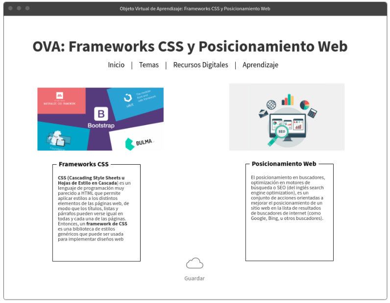

Frameworks CSS
CSS (Cascading Style Sheets u Hojas de Estilo en Cascada) es un lenguaje de programación muy parecido a HTML que permite aplicar estilos a los distintos elementos de las páginas web,
de modo que los títulos, listas y párrafos pueden verse igual en todas y cada una de las páginas. Entonces, un framework de CSS es una biblioteca de estilos genéricos que puede ser usada para implementar diseños web.

Celaya Luna, A. (2014). Creación de páginas web: HTML 5 (pág. 1 a 60). Recuperado de https://elibro-net.bibliotecavirtual.unad.edu.co/es/ereader/unad/56045
Posicionamiento Web
El posicionamiento en buscadores, optimización en motores de búsqueda o SEO (del inglés search engine optimization), es un conjunto de acciones orientadas a mejorar el posicionamiento
de un sitio web en la lista de resultados de buscadores de internet (como Google, Bing, u otros buscadores).

Posicionamiento en buscadores. (2020, 25 de octubre). Wikipedia, La enciclopedia libre. Fecha de consulta: 04:47, marzo 11, 2021 desde https://es.wikipedia.org/w/index.php?title=Posicionamiento_en_buscadores&oldid=130366542.
